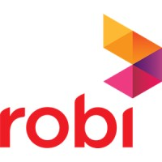

Data Scientist
SSL Wireless · Full-time
Jul 2021 – Current
- Project 1: Voice Recognition
Description: This project aims to facilitate and expedite the work of Sales Representatives, whose job is taking orders of products from different shops, by providing a voice recognition system for product names. I have built a voice recognition model by fine-tuning the wav2vec2 pre-trained model with a dataset that contais 59 unique product names and it recognizes the product names from voice with high accuracy.- Project 2: Customer Segmentation
Description: In this project, I have analyzed millions of customers’ data and performed customer segmentation for target marketing. As this company provides the largest payment gateway and SMS gateway aggregator in Bangladesh, every day millions of data are being generated here. I have prepared some feature engineering algorithms to generate the customers' demographic features from raw data. Then I have trained the K-means Clustering algorithm for building a customer segmentation model that automatically segments all of the customers based on their demographics and purchasing behavior.- Project 3: Invoice Information Parser
Description: In this project, we built a deep learning model that automatically detects all of the information from invoices of different formats. We built a skew corrector that provides the aligned images by removing the skewness of the images. Then, we applied the Cloud Vision API for recognizing the optical characters from images and applied a pre-trained detectron2 algorithm for detecting the tables from the image of invoices. Additionally, we built complex algorithms using the coordinates of characters for 1) parsing several fields out of the table and 2) organizing the table formatted data as the original format.

Data Scientist
Robi Axiata Limited · Full-time
Oct 2019 – Jun 2021
- Project 1: Churn Prediction
Description: In this project, I have built a DNN model for predicting whether a customer of Robi Axiata Limited will be churn or not within the following two months. We have used around 1.2M samples data with 41 features to train this churn prediction model. Also, I have built an interactive dashboard using Tableau to visualize the churn related insights obtained from the dataset.- Project 2: Next Best Offer prediction (NBO)
Description: This project was for the Campaign and Customer Lifecycle Management of Robi Axiata Ltd. In this project, I developed a DNN model that recommend the next best data pack for each of the subscribers based on their previous data usage behavior to increase company’s total data revenue. I trained this model with around 1M customers’ 29 attributes.- Project 3: Khmer NLP
Description: This project was for Smart Axiata, the leading telecom operator in Cambodia, to analyze the Smart’s Facebook and Chatbot’s data efficiently. In this project, firstly, I built a pretrained model for the Khmer language from scratch using BERT. For generating the training corpus, I built a Web Scraper by which I collected around 100K Khmer articles from several websites. Also, I modified google BERT official code to make compatible with Khmer language. Then, using Transfer Learning, I have developed three deep learning models for the three different applications such as Sentiment Analysis, Topic Classification, and NER. I deployed the model using Google Cloud Function API and Docker.- Project 4: Gross Addition Revenue Maximization and Automation
Description: The objective of this project was maximizing the GA revenue of Robi Axiata Limited by quality acquisition. We trained a DNN model to predict the number of quality acquisition for each of the retailers over the country. We also performed the E2E automation so that the model automatically set the GA target for each of the retailers each month. We also built a Tableau dashboard that automatically visualizes the analysis of the model outcomes and retailers’ activities to the decision makers.
Machine Learning Engineer
Silicon Orchard Limited · Internship
Aug 2019 – Sep 2019
- Project 1: Assessment Summarizer
Description: The goal of this project was to build a tool using the NLP techniques for the Human Resource division of a company to make the recruitment process fast. In this project, I automated the assessment process of the CV using several NLP methods such as Glove, WMD, etc.- Project 2: Fraud Detector
Description: The goal of this project was to detect fraudulent reviews by leveraging reviewer historical stylometrics in Amazon, Yelp, Facebook, and Google Reviews. In this project, I formed an efficient and sophisticated algorithm to detect fraudulent reviews using Natural Language Processing techniques.